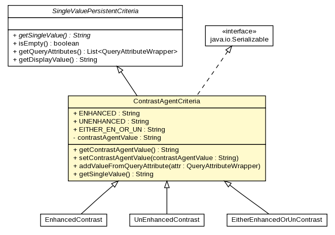

gov.nih.nci.ncia.criteria
Class ContrastAgentCriteria

java.lang.Object
 gov.nih.nci.ncia.criteria.Criteria
gov.nih.nci.ncia.criteria.PersistentCriteria
gov.nih.nci.ncia.criteria.SingleValuePersistentCriteria
gov.nih.nci.ncia.criteria.ContrastAgentCriteria
gov.nih.nci.ncia.criteria.Criteria
gov.nih.nci.ncia.criteria.PersistentCriteria
gov.nih.nci.ncia.criteria.SingleValuePersistentCriteria
gov.nih.nci.ncia.criteria.ContrastAgentCriteria
- All Implemented Interfaces:
- GridSearchCriteria, java.io.Serializable
- Direct Known Subclasses:
- ContrastAgentCriteria.EitherEnhancedOrUnContrast, ContrastAgentCriteria.EnhancedContrast, ContrastAgentCriteria.UnEnhancedContrast
public class ContrastAgentCriteria
- extends SingleValuePersistentCriteria
- implements java.io.Serializable
- See Also:
- Serialized Form
| Fields inherited from class gov.nih.nci.ncia.criteria.PersistentCriteria |
DISPLAY_NAME_ID_PREFIX |
| Methods inherited from class gov.nih.nci.ncia.criteria.PersistentCriteria |
getCommaSeparatedList, getDisplayName |
| Methods inherited from class java.lang.Object |
clone, equals, finalize, getClass, hashCode, notify, notifyAll, toString, wait, wait, wait |
ENHANCED
public static final java.lang.String ENHANCED
- See Also:
- Constant Field Values
UNENHANCED
public static final java.lang.String UNENHANCED
- See Also:
- Constant Field Values
EITHER_EN_OR_UN
public static final java.lang.String EITHER_EN_OR_UN
- See Also:
- Constant Field Values
contrastAgentValue
private java.lang.String contrastAgentValue
ContrastAgentCriteria
public ContrastAgentCriteria()
ContrastAgentCriteria
public ContrastAgentCriteria(java.lang.String contrastAgentValue)
- Parameters:
contrastAgentValue -
getContrastAgentValue
public java.lang.String getContrastAgentValue()
- Returns:
- Returns the contrastAgentValue.
setContrastAgentValue
public void setContrastAgentValue(java.lang.String contrastAgentValue)
- Parameters:
contrastAgentValue - The contrastAgentValue to set.
addValueFromQueryAttribute
public void addValueFromQueryAttribute(gov.nih.nci.ncia.querystorage.QueryAttributeWrapper attr)
- Specified by:
addValueFromQueryAttribute in class gov.nih.nci.ncia.criteria.PersistentCriteria
getSingleValue
public java.lang.String getSingleValue()
- Description copied from class:
SingleValuePersistentCriteria
- Returns the single value of this criteria
- Specified by:
getSingleValue in class SingleValuePersistentCriteria
- Returns: